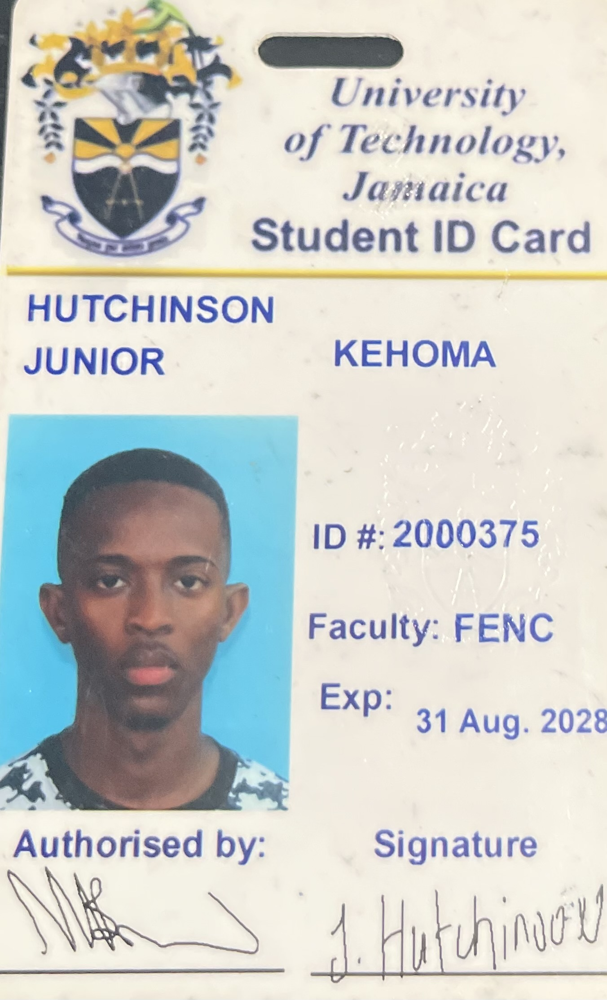

Welcome to My Portfolio
B.Sc. Computer Networks and Security student at the University of Technology, Jamaica. Click my ID badge image to send an email inquiry directly to my tutor.
Curriculum Vitae
Professional Summary
Result-driven, security-conscious, and customer-focused professional with advanced certifications in Customer Service Supervision and extensive data management experience.
Professional Experience
Supreme Court of the Judicature of Jamaica | Kingston, Jamaica
Court Clerk (December 2023 – Present)
- Interpreted live administrative proceedings to log highly precise summaries, case outcomes, and technical metadata into master update logs.
- Assisted in generating recurring operational reports, templates, and spreadsheets utilizing advanced Microsoft Excel functions.
- Managed daily calendar entries and coordinated task timelines to ensure workflow efficiency across the department.
Data Validation Officer & Scanning Specialist (October 2024 – December 2025)
- Accurately inputted, updated, and crosschecked high-volume legal records within the proprietary digital case management system, consistently maintaining a 100% accuracy rate.
- Reviewed and verified incoming documentation for completeness and correctness prior to system ingestion, successfully identifying and correcting alphanumeric entry errors.
- Organized and maintained extensive electronic files and indexing pathways to guarantee rapid retrieval and seamless information sharing across departments.
- Collaborated with registry teams to resolve data discrepancies and information conflicts, enhancing database integrity.
- Adhered strictly to rigorous institutional compliance guidelines and data confidentiality rules.
Electoral Office of Jamaica | Kingston, Jamaica
Public Assistant & Research Clerk (March 2020 – September 2022)
- Audited and cross-referenced historical system logs to locate, verify, and resolve individual data inconsistencies.
- Maintained clear, up-to-date communication entries and customer profiles within the organizational database.
- Addressed public inquiries proactively, using structured guidelines to safely isolate data issues and verify credentials.
Education
University of Technology, Jamaica
Bachelor of Science in Computer Networks and Security (August 2024 – Present)
Actively pursuing technical modules in System Administration, Database Management, and Information Technology Tools.
Mona High School
Caribbean Secondary Education Certificate (CSEC) (2016 – 2019)
Certifications achieved in 5 subjects: English A, Office Administration, Food Nutrition and Health, Human and Social Biology, and Religious Education.
Certifications & Diplomas
Garmex Academy
- Customer Service Supervision - Diploma]
- Business Management Supervision - Diploma
- Data Entry Operations - Level II (NVQ-J)
- Business Administration (Secretarial Skills) - Level II (NVQ-J)
CIT2011 Web Programming Labs & Assignments
Explore source code repositories and completed tutorial lab deliverables for CIT2011 (S1 AY26-27):